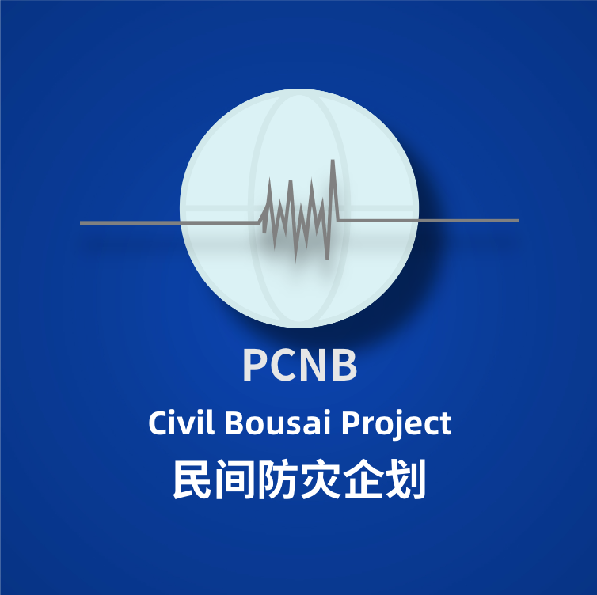

API提供:
Project BS-CEIV API(https://api.projectbs.cn/cenc/get_data.json)已弃用
新信息源:https://api.projectbs.cn/v2/ceic/get_data.json
Wolfx Public API:
1.JMA紧急地震速报API(https://api.wolfx.jp/jma_eew.json)
2.重庆市北碚区震度仪实时数据(https://api.projectbs.cn/red68/latest.json)
3.中国地震台网消息API-备用(https://api.wolfx.jp/cenc_eqlist.json)
版本更新:
Build Version
本项目隶属于PCNB
返回